Chapter 4 Sampling the imaginary
There is a blood test that correctly detects vampirism \(95\%\) of the time and incorrectly diagnoses normal people as vampires \(1\%\) of the time. Letting \(v\) denote being a vampire and \(h\) denote being human (not vampire) and \(+\) denote testing positive for vampirism, and \(-\) denote testing negative for vampirism, then we have: \[ \begin{aligned} \mathbb P(+|v) &= 0.95 \\ \mathbb P(-|v) &= 0.05 \\ \mathbb P(+|h) &= 0.01 \\ \mathbb P(-|h) &= 0.99 \\ \end{aligned} \] Suppose that vampires are quite rare, comprising only \(0.1\%\) of the population. That is \(\mathbb P(v) = 0.001\).
Now suppose someone tests positive for vampirism. What’s the actual probability that he/she is really a vampire?
Using Bayes’ theorem this is simple. We want \(\mathbb P(v|+)\) and we can find it through probability inversion as follows: \[ \begin{aligned} \mathbb P(v|+) &= \frac{\mathbb P(+|v) \mathbb P(v)}{P(+)} \\ &= \frac{\mathbb P(+|v) \mathbb P(v)}{\mathbb P(+|v)\mathbb P(v) + \mathbb P(+|h)\mathbb P(h)} \\ &= \frac{0.95\times 0.001}{0.95\times 0.001 + 0.01 \times 0.999} \\ &= 0.08683729 \end{aligned} \] The calculations can be carried out easily in R:
p_pos_v = 0.95
p_pos_h = 0.01
p_neg_v = 1 - p_pos_v
p_neg_h = 1 - p_pos_h
p_v = 0.001
p_h = 1 - p_v
p_pos = p_pos_v * p_v + p_pos_h * p_h
p_v_pos = p_pos_v * p_v / p_pos
print(p_v_pos)## [1] 0.08683729There is (only) an \(8.7\%\) that the tested person is actually a vampire. Whenever the condition of interest is very rare, having a test that finds all the true cases is still no guarantee that a positive result carries much information at all. Why? Because most positive tests are false positives, even when all the true positives are detected correctly.
The above results seems counter-intuitive. But there’s a way to frame it — in terms of frequencies — that makes it far easier. Suppose we have 100000 people in the population and 100 of them are vampires. Of the 100 vampires, 95 of them would test positive for vampirism. Of the 99900 humans, 999 of them would test positive for vampirism.
Now, suppose we test the whole population, what proportion of those who test positive do you expect to actually be vampires? It’s simple now right: \[ \mathbb P(v|+) = \frac{95}{1094} \approx 0.087 \] Using frequencies makes things easier — and we exploit this fact when we sample from a posterior distribution.
4.1 Sampling from a grid-approximate posterior
A globe-tossing model: You have a globe representing Earth and you’re curious about how much of the surface is covered in water. You will toss the globe in the air and catch it, and record whether or not the surface under your right index finger is water or land. Repeat the procedure some number of times and then look at the relative proportions of water to land. The first 9 observations are \[ W\;L\;W\;W\;W\;L\;W\;L\;W \] Before we can work with samples, we need to generate them.
The data story is simply that the true proportion of water covering the globe is \(p\), a single toss of the globe has probability \(p\) of producing water and probability \(1-p\) of producing land, and each toss of the globe is independent of the others.
To translate the data story into a probability model: the counts of “water” and “land” are distributed binomially, with probability \(p\) of water on each toss: \[ \mathbb P(W,L|p) = \frac{(W+L)!}{W!L!}p^W(1-p)^L. \] A Bayesian model specifies a likelihood: \[ W \sim \text{Binomial}(N,p); \quad N = W + L \] and a prior: \[ p \sim \text{Uniform}(0,1) \] To actually process the data and model, to produce a posterior, we need an engine. Most real-world models don’t allow us to find analytical (pen and paper) solutions. Instead for small models we can use grid approximation, for moderately larger models we canuse quadratic approximation, and for proper real-world models we can use MCMC.
## Loading required package: pacmann_grid = 1000
grid_limits = c(0,1)
p_grid = seq( from=grid_limits[1], to=grid_limits[2], length.out=n_grid)
prob_p = rep( 1, 1000)
prob_data = dbinom( 6, size=9, prob=p_grid )
posterior = prob_data * prob_p
posterior = posterior / sum(posterior)pacman::p_load(rethinking)
samples = sample( p_grid, prob=posterior, size=1e4, replace=TRUE )
plot( samples )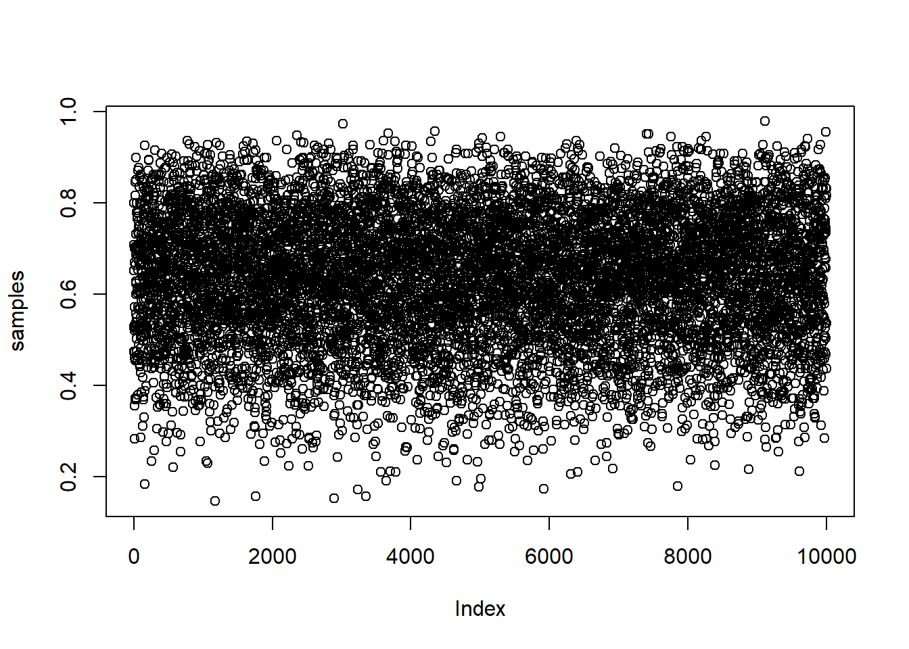
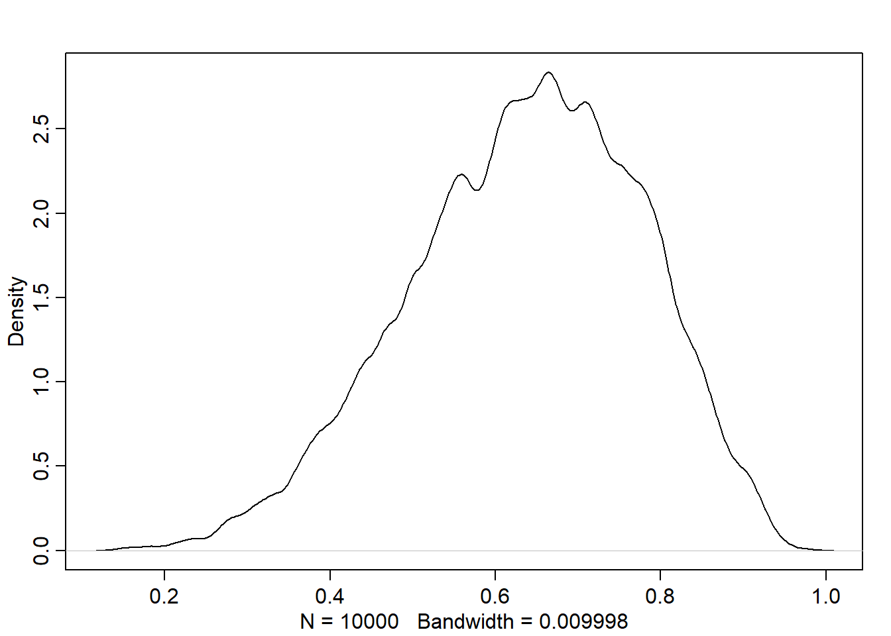 ## Sampling to summarize
4.1.1 Intervals of defined boundaries
To get the proportion of water less than some value of p_grid:
## [1] 0.1737## [1] 0.5984## 80%
## 0.7617618## 10% 90%
## 0.4444444 0.8108108n_grid = 1000
grid_limits = c(0,1)
p_grid = seq( from=grid_limits[1], to=grid_limits[2], length.out=n_grid)
prior = rep( 1, n_grid)
likelihood = dbinom( 3, size=3, prob=p_grid )
posterior = likelihood * prior
posterior = posterior / sum(posterior)
samples = sample( p_grid, size=1e4, replace=TRUE, prob=posterior )## 25% 75%
## 0.7057057 0.9289289## |0.5 0.5|
## 0.8368368 0.9989990## [1] 1## [1] 0.9851767## [1] 0.7992729## [1] 0.8378378## [1] 0.3128752pacman::p_load(purrr)
loss = map_dbl(
p_grid,
function(d){ sum( posterior * abs( d - p_grid ) ) } )
p_grid[ which.min(loss) ]## [1] 0.8408408Generating dummy data: suppose we have two tosses and the probability of water is 0.7: \((N=2, p = 0.7)\). To compute the probability of the possible outcomes:
This tells us that there is a \(9\%\) chance that \(w=0\), a \(42\%\) chance that \(w=1\) and a \(49\%\) chance that \(w=2\).
Let’s simulate observations now using these probabilities:
## dummy_w
## 0 1 2 3 4 5 6 7
## 0.000018 0.000396 0.003934 0.021034 0.073673 0.171391 0.266765 0.267270
## 8 9
## 0.155119 0.040400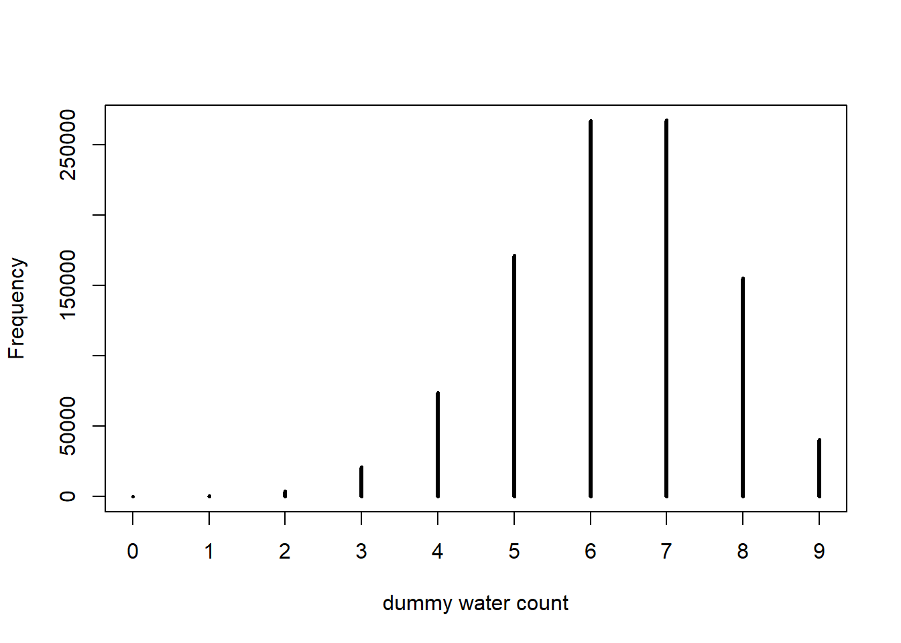
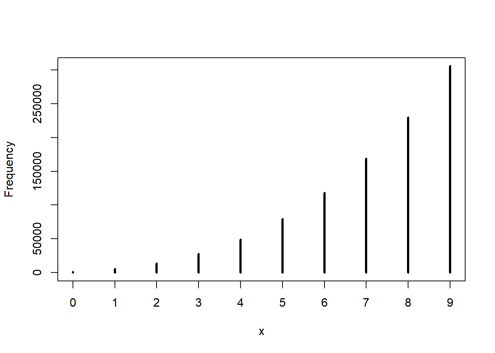
4.2 Chapter 3 Practice Problems
The easy problems all use the following code:
require(rethinking)
p_grid <- seq( from=0, to=1, length.out=1000)
prior <- rep( 1, 1000)
likelihood <- dbinom( 6, size=9, prob=p_grid)
posterior <- likelihood * prior
posterior <- posterior/ sum(posterior)
set.seed(100)
samples <- sample(p_grid, prob=posterior, size=1e4, replace=TRUE)
dens(samples)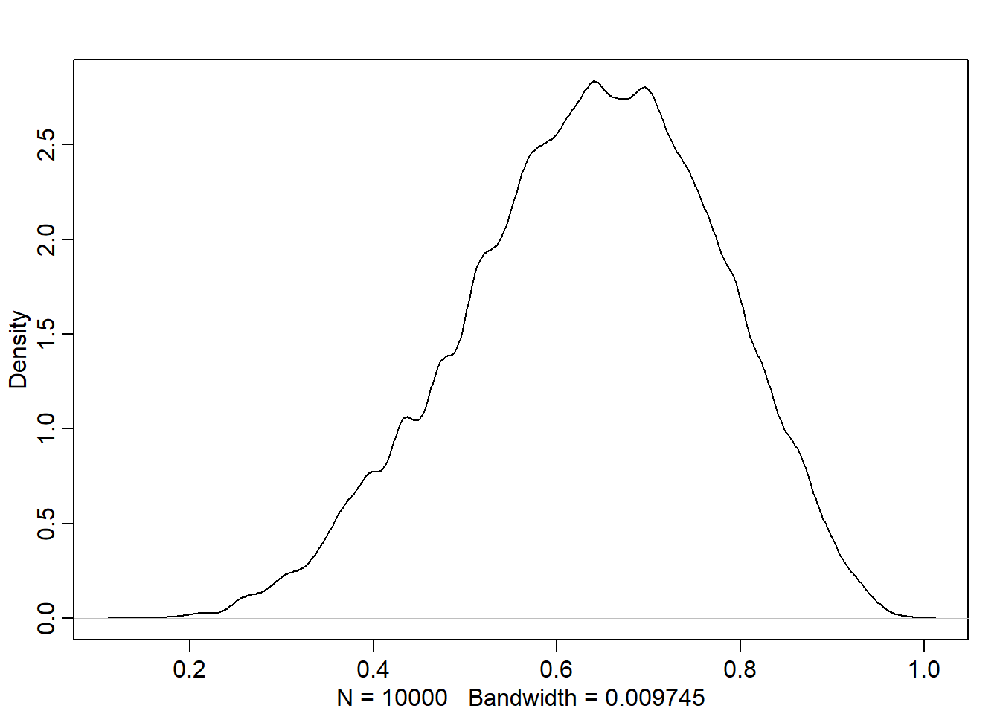
Use the values in samples to answer the following questions:
4.2.1 3E1.
How much posterior probability lies below p = 0.2?
Solution This is just asking for the sum of probabilities \(<0.2\):
# Using samples from posterior
sp = 100 * sum( samples < 0.2 ) / 1e4
# cf. grid-approximate posterior
gp = 100 * sum( posterior[ p_grid < 0.2 ])
paste("The samples give ", round(sp,4), "% less than 0.2, while the grid-approximate posterior indicates ", round(gp,4), "% less than 0.2")## [1] "The samples give 0.04 % less than 0.2, while the grid-approximate posterior indicates 0.0856 % less than 0.2"4.2.2 3E2.
How much posterior probability lies above p = 0.8?
Solution This is just asking for the sum of probabilities on \(> 0.8\)
# Using samples from posterior
sp = 100 * sum( samples > 0.8 ) / 1e4
# cf. grid-approximate posterior
gp = 100 * sum( posterior[ p_grid > 0.8 ])
paste("The samples give ", round(sp,4), "% greater than 0.8, while the grid-approximate posterior indicates ", round(gp,4), "% greater than 0.8")## [1] "The samples give 11.16 % greater than 0.8, while the grid-approximate posterior indicates 12.0345 % greater than 0.8"4.2.3 3E3.
How much posterior probability lies between p = 0.2 and p = 0.8?
Solution This is just asking for the sum of probabilities on \(> 0.2\; \&\; <0.8\)
# samples
sp = 100 * sum( samples > 0.2 & samples < 0.8) / 1e4
# grid-approximate
gp = 100 * sum( posterior[ p_grid > 0.2 & p_grid < 0.8 ])
paste("The samples give", round(sp,4), "% in (0.2, 0.8), while the grid-approximate posterior indicates", round(gp,4), "% in (0.2, 0.8)")## [1] "The samples give 88.8 % in (0.2, 0.8), while the grid-approximate posterior indicates 87.8799 % in (0.2, 0.8)"4.2.4 3E4.
20% of the posterior probability lies below which value of p?
Solution This is just asking for the 20th percentile:
q_20 = quantile( samples, 0.2, lower.tail=TRUE)
paste("The 20th percentile is", round(q_20, 2), "(to 2 dp)") ## [1] "The 20th percentile is 0.52 (to 2 dp)"4.2.5 3E5.
20% of the posterior probability lies above which value of p?
Solution This is just asking for the (100 - 20)th = 80th percentile:
# from lower tail
q_80 = quantile( samples, 0.8, lower.tail=TRUE )
paste("The 80th percentile is", round(q_80, 2), "(to 2 dp)") ## [1] "The 80th percentile is 0.76 (to 2 dp)"4.2.6 3E6.
Which values of p contain the narrowest interval equal to 66% of the posterior probability?
Solution This is just asking for the 66% HPDI:
## |0.66 0.66|
## 0.51 0.77paste("The narrowest interval containing 66% of the probabilitiy mass is the 66% HPDI: ", "[", HPDI_66[1],",",HPDI_66[2], "]", ", (to 2 dp)", sep="") ## [1] "The narrowest interval containing 66% of the probabilitiy mass is the 66% HPDI: [0.51,0.77], (to 2 dp)"4.2.7 3E7.
Which values of p contain 66% of the posterior probability, assuming equal posterior probability both below and above the interval?
Solution This is just asking for the 66% PI:
## 17% 83%
## 0.50 0.77paste("The narrowest interval containing 66% of the probabilitiy mass is the 66% PI: ", "[", PI_66[1],",",PI_66[2], "]", ", (to 2 dp)", sep="") ## [1] "The narrowest interval containing 66% of the probabilitiy mass is the 66% PI: [0.5,0.77], (to 2 dp)"4.2.8 3M1.
Suppose the globe tossing data had turned out to be 8 water in 15 tosses. Construct the posterior distribution, using grid approximation. Use the same flat prior as before.
Solution First write a function so we can input any number of waters in any number of tosses — a bit more generic:
globe_water_distn <- function(n_trials, n_water, n_grid=1e3, n_samples=1e4, seed=100, prior=rep(1, n_grid) ){
set.seed(seed)
p_grid = seq( from=0, to=1, length.out=n_grid )
prior = prior
likelihood = dbinom( n_water, size=n_trials, prob=p_grid )
lp = likelihood * prior
posterior = lp/ sum(lp)
out = list(p_grid = p_grid, prior = prior, likelihood = likelihood, posterior = posterior)
return(out)
}Now try it with n_trials = 15 and n_water = 8:
4.2.9 3M2.
Draw 10,000 samples from the grid approximation from above. Then use the samples to calculate the 90% HPDI for p.
Solution
require(rethinking)
n_samples = 1e5
samples = sample( out[["p_grid"]],
size=n_samples,
replace=TRUE,
prob=out[["posterior"]])
hpdi90_1 = HPDI( samples, prob=0.9)
hpdi90_1## |0.9 0.9|
## 0.3313313 0.71671674.2.10 3M3.
Construct a posterior predictive check for this model and data. This means simulate the distribution of samples, averaging over the posterior uncertainty in p. What is the probability of observing 8 water in 15 tosses?
Solution
Propagate parameter uncertainty into predictions by using samples as the probability weightings:
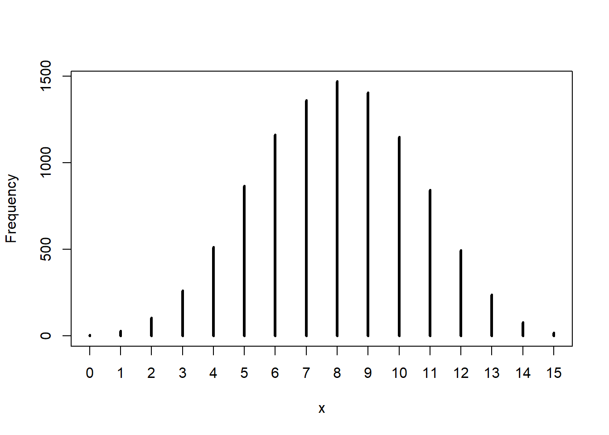
## [1] 14.74.2.11 3M4.
Using the posterior distribution constructed from the new (8/15) data, now calculate the probability of observing 6 water in 9 tosses.
Solution
Use the posterior from 3M1 as the prior for this run, with n_trials = 9 and n_water = 6:
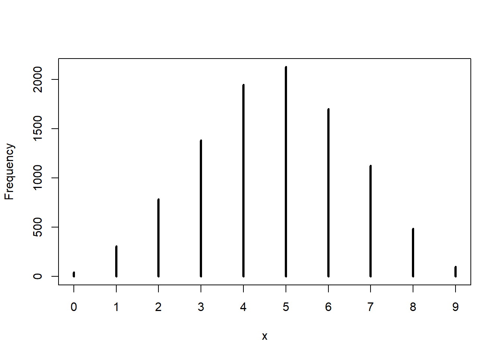
## [1] 174.2.12 3M5.
Start over at 3M1, but now use a prior that is zero below p = 0.5 and a constant above p = 0.5. This corresponds to prior information that a majority of the Earth’s surface is water. Repeat each problem above and compare the inferences. What difference does the better prior make? If it helps, compare inferences (using both priors) to the true value p = 0.7.
Solution
Simply pass a prior of the form ifelse( p_grid < 0.5, 0, 1) instead of the uniform prior:
out2 = globe_water_distn(15, 8, prior = ifelse(p_grid < 0.5, 0, 1))
n_samples = 1e5
samples = sample( out2[["p_grid"]],
size=n_samples,
replace=TRUE,
prob=out2[["posterior"]])
plot( out2$posterior ~ out2$p_grid, type = "l")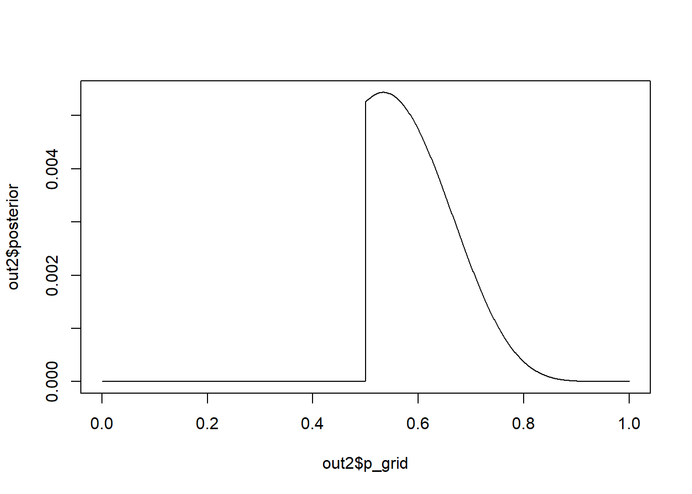
## |0.9 0.9|
## 0.5005005 0.7117117## [1] "The uniform prior gave a 90% HPDI of:"## |0.9 0.9|
## 0.33 0.72## [1] "The informed prior gave a 90% HPDI of:"## |0.9 0.9|
## 0.50 0.71print("The informed prior leads to a narrower HPDI indicating that the informed prior leads to lesser uncertainty about the underlying value of the proportion of water on the globe's surface.")## [1] "The informed prior leads to a narrower HPDI indicating that the informed prior leads to lesser uncertainty about the underlying value of the proportion of water on the globe's surface."Now the posterior predictive distribution:
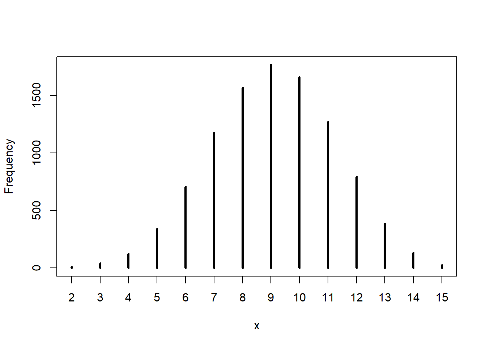
## [1] 15.69Now 8/15 is not exactly in the center of the posterior predictive distribution. The informative prior tells the model not to completely trust the data, so the simulated posterior sampling distributions are not quite centered on the data.
4.2.13 3M6.
Suppose you want to estimate the Earth’s proportion of water very precisely. Specifically, you want the 99% percentile interval of the posterior distribution of p to be only 0.05 wide. This means the distance between the upper and lower bound of the interval should be 0.05. How many times will you have to toss the globe to do this?
Assuming the uniform prior Borrowed from Brian Callander and done using tidyverse functions:
Bayesian models are generative, so we can simulate new datasets according to our prior probabilities. We’ll simulate 100 datasets for each value of \(N\) of interest. We simulate a dataset by choosing a p_true from our prior, then randomly choosing a w from the corresponding binomial distribution.
pacman::p_load(tidyverse)
m6_prior_predictive = crossing(
N = 200 * (1:16),
iter = 1:10
) %>%
mutate(
p_true = runif(n(), min=0, max=1),
W = rbinom(n(), N, p_true)
)For each of these simulated datasets, we grid approximate the posterior, take posterior samples, then calculate the HPDI
granularity = 1000
m6_grid = tibble(p = seq(0, 1, length.out = granularity)) %>%
mutate(prior = 1)
m6_posteriors = m6_prior_predictive %>%
crossing(m6_grid) %>%
group_by(N, p_true, iter) %>%
mutate(
likelihood = dbinom(W, N, p),
posterior = prior * likelihood
)
m6_samples = m6_posteriors %>%
sample_n(1000, replace=TRUE, weight=posterior)
m6_hpdi = m6_samples %>%
summarise(lo = HPDI(p, 0.99)[1], hi = HPDI(p, 0.99)[2]) %>%
mutate(width = abs(hi - lo))## `summarise()` regrouping output by 'N', 'p_true' (override with `.groups` argument)Now for each value of N, we check how many of the intervals have the desired width:
## `summarise()` ungrouping output (override with `.groups` argument)gg1 = ggplot(data = m6_n,
mapping = aes(x = N, y = 100 * fraction)) +
geom_point() +
geom_line()
gg1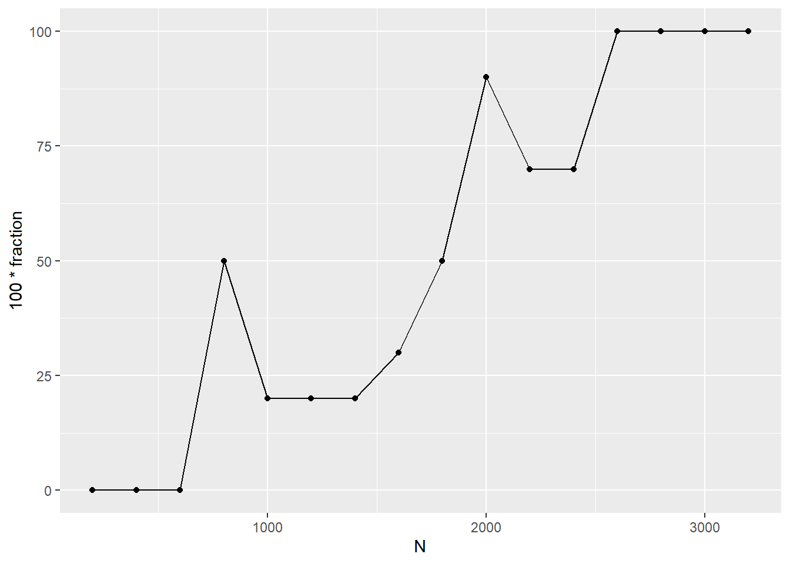
NB. The hard problems here all use the data below. These data indicate the gender (male=1, female=0) of officially reported first and second born children in 100 two-child families. The data is in the homeworkch3 data set:
4.2.14 3H1.
Using grid approximation, compute the posterior distribution for the probability of a birth being a boy. Assume a uniform prior probability. Which parameter value maximizes the posterior probability?
** Data story**
- The true proportion of boys births in 2-child families is \(p\)
- A single sample of a 2-child family has probability \(p\) of having a boy birth, and probaility \(1-p\) of having a not boy (girl) birth.
- Each family sampled is independent of the others, and each birth within a family is independent in terms of propensity for a particular gender (this may not be quite valid).
Model
Let \(B\) denote the number of boy births and \(G\) denote the number of girl births, and assign the data model: \[ B \sim \text{Binomial}(N,p) \] where \(N = B + G\). Suppose we have vague prior information and assume it is uniform: \[ p \sim \text{Uniform}(0,1) \] Then we can in this case, \(N=200\) (2 children in each of 100 families).
Let’s check the total number of boys and girls:
h1_birthcounts = df %>%
summarise(
boy_births = sum(c(birth1, birth2)),
total_births = length(c(birth1, birth2))
)
h1_birthcounts## # A tibble: 1 x 2
## boy_births total_births
## <dbl> <int>
## 1 111 200Now proceed to a grid-approximation of the posterior
# define global variables
granularity = 1000
# define grid
h1_p_grid = tibble(p = seq( from=0, to=1, length.out=granularity)) %>%
mutate(prior = 1)
# grid-approximation of posterior
h1_posterior = h1_p_grid %>%
mutate(
likelihood = dbinom(
x = h1_birthcounts$boy_births,
size = h1_birthcounts$total_births,
prob = p),
posterior = (prior * likelihood)/sum(prior*likelihood)
)The maximum a posteriori (MAP) estimate is:
## [1] 0.55Create a plot to show this:
h1_ggp = h1_posterior %>%
ggplot( aes(x = p) ) +
geom_line( aes(y = posterior) ) +
geom_area( aes(y = posterior), colour="white", fill="steelblue" )
h1_ggp + geom_vline(aes(xintercept = h1_map),
color="red",
linetype="dashed",
size=1) +
annotate(geom = "text",
x = 0.65, y = 0.012,
label = paste("MAP =", h1_map %>% round(2)),
color="red") +
labs(x = "Probability of a boy birth (p)",
y = "Probability Density",
title = "3H1 Posterior probability of giving birth to a boy") +
theme_minimal()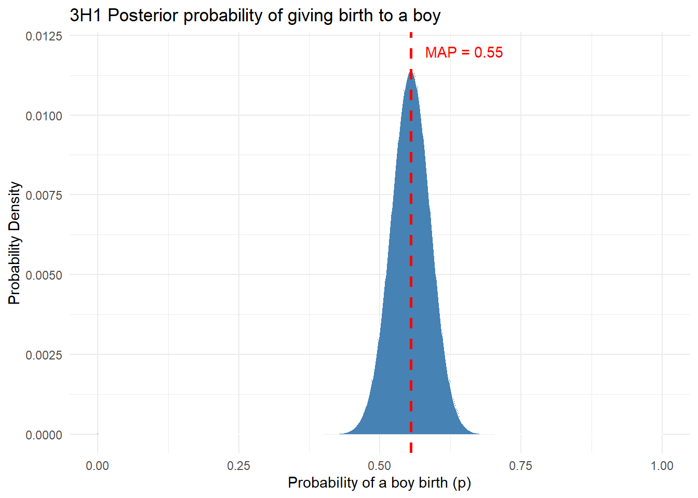
4.2.15 3H2.
Using the sample function, draw 10,000 random parameter values from the posterior distribution you calculated above. Use these samples to estimate the 50%, 89%, and 97% highest posterior density intervals.
Solution
Draw samples from the grid weighted according to the posterior probabilities. Can do this following the book as:
# rethinking approach:
n_samples = 1e4
h2_samples = with(h1_posterior,
sample(p, prob = posterior, size=n_samples, replace=TRUE) )and then use rethinking::HPDI() to find highest posterior density intervals for the given levels. However, we can also use a tidyverse approach:
# tidyverse approach:
n_samples = 1e4
h2_samples = h1_posterior %>%
sample_n(size = n_samples, replace=TRUE, weight=posterior) %>%
pull(p)
h2_hpdi = h2_samples %>%
crossing(prob = c(0.5, 0.89, 0.97)) %>%
group_by(prob) %>%
group_map(HPDI)
h2_hpdi## [[1]]
## |0.5 0.5|
## 0.5005005 0.6126126
##
## [[2]]
## |0.89 0.89|
## 0.4534535 0.6516517
##
## [[3]]
## |0.97 0.97|
## 0.4454454 0.67467474.2.16 3H3.
Use rbinom to simulate 10,000 replicates of 200 births. You should end up with 10,000 numbers, each one a count of boys out of 200 births. Compare the distribution of predicted numbers of boys to the actual count in the data (111 boys out of 200 births). There are many good ways to visualize the simulations, but the dens command (part of the rethinking package) is probably the easiest way in this case. Does it look like the model fits the data well? That is, does the distribution of predictions include the actual observation as a central, likely outcome?
Solution
Samples from the posterior predictive distribution are “possible” observed counts of boy births from 200 according to the posterior, and it’s easy to generate these (under a uniform prior) by simply setting the prob argument of rbinom() to values in h2_samples, to draw binomial random numbers as follows:
# posterior predictive samples
h3_posterior_predictive = tibble(
predicted_values = rbinom(n=1e4, size=200, prob=h2_samples) )
# plot the posterior predictive distribution and
# draw a vertical line to indicate the actual observed value of 111 from 200.
h3_ggp = h3_posterior_predictive %>%
ggplot( aes(x = predicted_values) ) +
geom_histogram(aes(y=..density..), colour="black", fill="cyan4") +
geom_density( alpha=0.2, fill="cyan") +
geom_vline(aes(xintercept = h1_birthcounts$boy_births),
color="darkorange",
linetype="dashed",
size=1.25) +
labs(x = "Number of boys in 200 births",
y = "Probability Density",
title = "3H3: the posterior predictive distribution for 200 births",
subtitle = "The dashed line indicates the actual data: 111 boys born from 200 births") +
theme_minimal()
h3_ggp## `stat_bin()` using `bins = 30`. Pick better value with `binwidth`.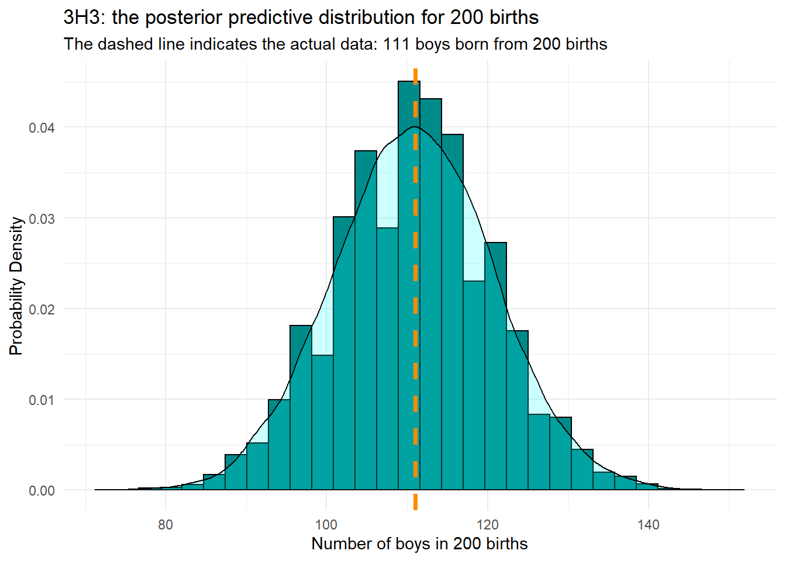
As can be seen, the actual observed value of 111 boy births from 200 total births is very close to the peak of the posterior predictive distribution, so that indicates that our model is placing most probability in the region that the data indicates is appropriate.
4.2.17 3H4.
Now compare 10,000 counts of boys from 100 simulated first borns only to the number of boys in the first births, birth1. How does the model look in this light?
Solution So far we’ve considered getting 111 from 200 births, but these come from only 100 families, and we’ve so far ignored any influence of birth order. But we can easily produce a new predictive distribution that only deals with the first 100 births (i.e. the first births in each family):
# posterior predictive samples
h4_posterior_predictive = tibble(
predicted_values = rbinom(n=1e4, size=100, prob=h2_samples) )
# plot the posterior predictive distribution and
# draw a vertical line to indicate the actual observed value of 111 from 200.
h4_ggp = h4_posterior_predictive %>%
ggplot( aes(x = predicted_values) ) +
geom_histogram(aes(y=..density..), colour="black", fill="cyan4") +
geom_density( alpha=0.2, fill="cyan") +
geom_vline(aes(xintercept = sum(df$birth1)),
color="darkorange",
linetype="dashed",
size=1.25) +
labs(x = "Number of boys in 100 births",
y = "Probability Density",
title = "3H4: the posterior predictive distribution for 100 births",
subtitle = "The dashed line indicates the actual data: 51 boys born from 100 first-born births") +
theme_minimal()
h4_ggp## `stat_bin()` using `bins = 30`. Pick better value with `binwidth`.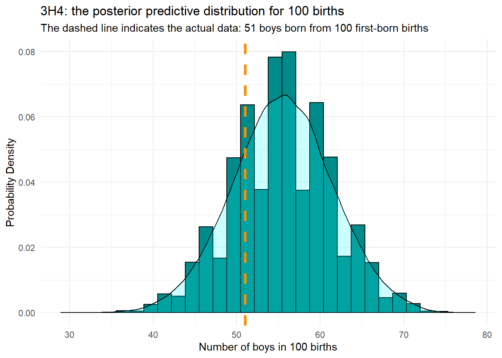
## What's the probability of between 50 and 52 first births under the posterior ## predictive distribution?
h4_posterior_predictive %>%
summarise(prob_51_100 = 100*mean(predicted_values > 50 & predicted_values < 52))## # A tibble: 1 x 1
## prob_51_100
## <dbl>
## 1 5.14## What's the achieved level of significance
h4_posterior_predictive %>%
summarise(prob_als51_100 = 100*mean(predicted_values <= 51))## # A tibble: 1 x 1
## prob_als51_100
## <dbl>
## 1 25.2## What's the MAP estimate for the predictive distribution
h4_dens = with(h4_posterior_predictive,
density(predicted_values))
h4_dens$x[ which.max(h4_dens$y) ]## [1] 55.71489Now the fit of the model doesn’t look quite so good. It’s not terrible, but the model MAP estimated number of first-born boys being about 55, and values of 51 or fewer are only expected about \(25\%\) of the time. From the predicted values, we only expect to observe 51 first-born male births slightly less than \(5\%\) of the time.
4.2.18 3H5.
The model assumes that sex of first and second births are independent. To check this assumption, focus now on second births that followed female first borns. Compare 10,000 simulated counts of boys to only those second births that followed girls. To do this correctly, you need to count the number of first borns who were girls and simulate that many births, 10,000 times. Compare the counts of boys in your simulations to the actual observed count of boys following girls. How does the model look in this light? Any guesses what is going on in these data?
Solution Let’s check the number of boys born after a girl.
h5_birthcounts = df %>%
filter(birth1 == 0) %>%
summarise(boy_births = sum(birth2), total_births = n())
h5_posterior_predictive = tibble(
predicted_values = rbinom(
n = 1e4,
size = h5_birthcounts$boy_births,
prob = h2_samples)
)
h5_ggp = h5_posterior_predictive %>%
ggplot( aes(x = predicted_values) ) +
geom_histogram(aes(y=..density..), colour="black", fill="cyan4") +
geom_density( alpha=0.2, fill="cyan") +
geom_vline(aes(xintercept = h5_birthcounts$boy_births),
color="darkorange",
linetype="dashed",
size=1.25) +
labs(x = "Number of 2nd-born boys after female 1st-borns",
y = "Probability Density",
title = "3H5: the posterior predictive distribution",
subtitle = "The dashed line indicates the actual data: 39 boys born following after 49 first-born girls") +
theme_minimal()
h5_ggp## `stat_bin()` using `bins = 30`. Pick better value with `binwidth`.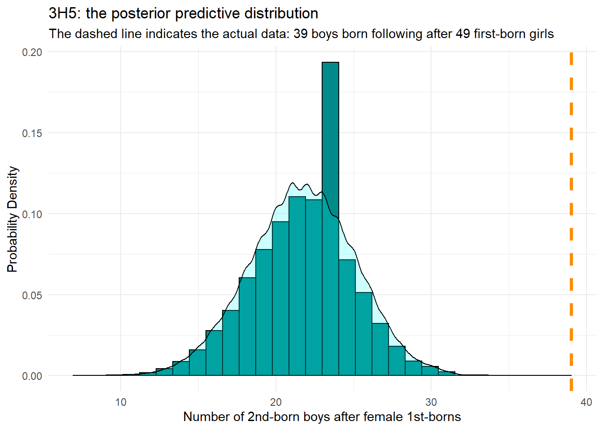
## What's the achieved level of significance
h5_posterior_predictive %>%
summarise(prob_als39_49 = 100*mean(predicted_values >= 39))## # A tibble: 1 x 1
## prob_als39_49
## <dbl>
## 1 0The fit here is very poor, indicating that the assumption of independence of birth gender from first born to second born is not adequate. Indeed, none of the 10000 predicted observations were as high as 39 second-born male births following on from 49 first-born female births. We should stratify this model and fit to first and then second and make that distinction the whole way through.
Xie, Yihui. 2015. Dynamic Documents with R and Knitr. 2nd ed. Boca Raton, Florida: Chapman; Hall/CRC. http://yihui.org/knitr/.